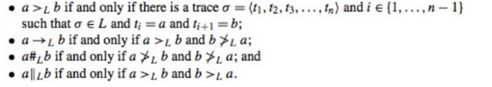

Business process mining
It is the process that allow to discover and evaluate new BPM models. There are three types of process mining:
- discovery
- conformance checking
- enhancement
and 6 guiding principles:
- Event Data should be treated as first-class citizens
- Log Extraction should be driven by questions
- Concurrency, Choice and other basic control-flow constructs should be supported
- Events should be related to model elements
- Models should be treated as purposeful abstractions of reality
- Process mining should be a continuous process
More on point one
Logs should be trustworthy, complete, well-defined and should guarantee privacy and security. IEEE XES Standard is a standard for event logs. In the log should be reported the description of the event, the id, the timestamp and the relation to activity start/end
Process discovery
We would like to learn a representative model from our logs. In order to do so we can use the α-algoritm:  The α-algorithm generate a footprint matrix (another way to represent data) and looks for sets (A,B) such that A → B ∧ A#A ∧ B#B by swapping rows and cols looking for a pattern.
Limits: it can learn complex nets that are not necessarily implicit tranisition places. No loops of dimension 1, 2. No local-dependencies and does not take into account frequencies and duplicate activities (nor silent transitions)
Conformance Checking
It focusses on logs. It then compares them to the model to check for descrepancies (error for descriptive models, deviations for prescrictive ones).
Conformance Checking using Token Replay
In Petri nets we can use tokens to keep track of the order of the transitions, then check if our model fits the trace.
Problems: fitness values tend to be too high for extremely problematic logs; deviation make the net flooded of tokens; duplicated activities are difficult to achieve
Conformance checking via Alignment
We can align the logs in order to undesteand the trace and then see how our model align with that trace.